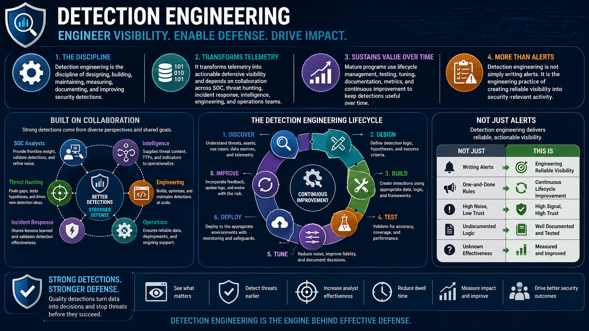

What Is Detection Engineering?
Course Summary
Connecting to LMS... Progress: in progress
Version 1.0 | Date: 2026-06-16 | Educational overview of defensive detection engineering concepts.

Narration
Detection engineering is the discipline of designing, building, maintaining, measuring, documenting, and improving security detections.
It transforms telemetry into actionable defensive visibility and depends on collaboration across SOC, threat hunting, incident response, intelligence, engineering, and operations teams.
Mature programs use lifecycle management, testing, tuning, documentation, metrics, and continuous improvement to keep detections useful over time.
Detection engineering is not simply writing alerts. It is the engineering practice of creating reliable visibility into security-relevant activity.